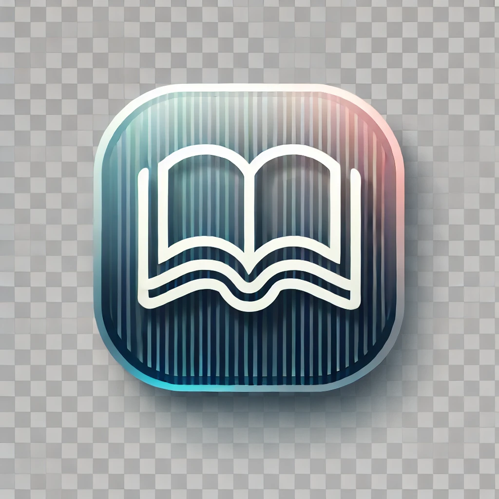

Kitap Önerileri

- Bobby Fischer Teaches Chess – Bobby Fischer
- My System – Aron Nimzowitsch
- Endgame Strategy – Mikhail Shereshevsky
- Life and Games of Mikhail Tal – Mikhail Tal
Film / Dizi Önerileri
- The Queen's Gambit (Netflix Dizisi) – Satranç tutkusunu müthiş atmosferde anlatan harika bir yapım.
- Searching for Bobby Fischer – Genç bir satranç dahisinin gerçek hikayesi ve aile draması.
- The Dark Horse – Yeni Zelanda'dan ilham verici bir satranç hikayesi.
YouTube Kanalları

- Agadmator’s Chess Channel – Dünyaca ünlü maç analizleri
- GothamChess – Eğlenceli ve eğitici videolar
- ChessNetwork – Çeşitli seviyelerde canlı maç yorumları ve dersler
- Hanging Pawns – Teorik açılış incelemeleri ve dersler